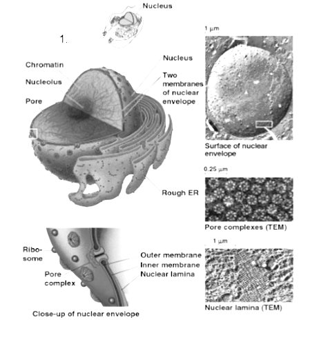

Nucleus

Surrounded by a double membrane known as nuclear envelope:
- Outer membrane of the nuclear envelope is continuous with another organelle called the endoplasmic reticulum
- Inner membrane is in contact with the contents of the nucleus
- Is perforated with pores known as nuclear pores
Nearly all the cell’s DNA (organised into chromosomes) is found here.
One or more nucleolus (plural: nucleoli) within the nucleoplasm.
Nuclear division is the basis of cell replication.
Nucleolus is responsible for synthesis and partial assembly of ribosomes.
Cell surface membrane
.png "cell surface membrane")
Each phospholipid is made up of a glycerol molecule attached to a phosphate group and 2 fatty acid chains.
Additional components:
- Cholesterol
- Glycoproteins/ glycolipids
- Transport proteins
Acts as a barrier between the cytoplasm and the environment
Prevents most water-soluble substances from entering or leaving the cell
Centrioles (in animal cells only)
.png "centriole")
2 centrioles make up a centrosome.
Found:
- In pairs only in animal cells, positioned in the cytoplasm outside the nucleus but close to it
- As single structures at the base of cilia and flagella
Involved in the formation of cilia and flagella
Ribosomes
.png "ribosome")
Has no membranes
Made up of protein and ribonucleic acid (ribosomal RNA)
Each ribosome comprises 2 sub-units - a large subunit and a small subunit.
Location:
- Attached to the rER
or
- As free ribosomes in the cytosol
Endoplasmic Reticulum (ER)
.png "ER")
Consists of a network of membranous tubes or sacs called cisternae (singular: cisterna)
2 types of ER:
- Rough ER (rER): ribosomes are present on its surface
- Smooth ER (sER): lacks ribosomes, more tubular
rER: synthesises and transports proteins
Golgi apparatus
.png "Golgi apparatus")
Continually being formed at cis face (receiving side) by fusion of a vesicle from the ER and continually budded off at the trans face (shipping side) where vesicles are pinched off
Lysosome formation
Lysosomes
.png "lysosome")
Bound by a single membrane
Formed from a the Golgi apparatus
Contains a concentrated mixture of hydrolytic digestive enzymes
Autophagy: digestion of worn-out/ improperly functioning organelles
Autolysis: self-digestion of a cell by the release of lysosome contents within the cell
Mitochondrion (plural: mitochondria)
.png "mitochondrion")
Bound by a double membrane, an outer and inner membrane separated by the inner-membrane space.
The outer membrane is a smooth and continuous boundary. The inner membrane is extensively folded to form cristae (singular: crista) that project into the interior (the matrix).
Within the matrix, hereditary materials (circular DNA, RNA) and ribosomes can be found.
Chloroplast (in plant cells only)
.png "choloroplast")
Bound by a double membrane:
- Outer membrane is smooth and continuous.
- Inner membrane gives rise to membranes called lamellae (singular: lamella)
or thylakoids which extends throughout the interior.
Interior of the chloroplast is gel-like matrix called stroma.
Within the stroma: thylakoids are stacked into grana (singular: granum), which are joined together by the intergranal lamellae.
Contains photosynthetic pigments (e.g. chlorophyll) which make the chloroplasts appear green.
Vacuole
.png "vacuole")
In animal cells: usually relatively small and less permanent (called vesicles)
In plant cells, a large central, permanent vacuole surrounded by a membrane (tonoplast), containing cell sap.
Contains pigments in solution (e.g. anthocyanins)
Hydrolytic enzymes may sometimes be present, making the vacuole act as a lysosome
Waste products may accumulate within the vacuole
Some of the dissolved substances act as food reserves
Cell wall (in plant cells only)
.png "cell wall")
Consists predominantly of cellulose
Cell wall materials are strong yet permeable therefore allowing the free passage of substances into and out of the cell.